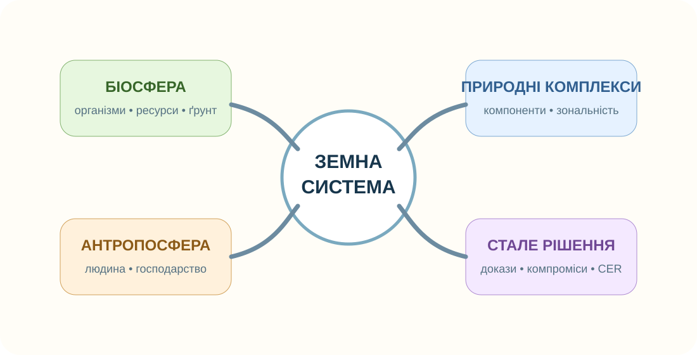
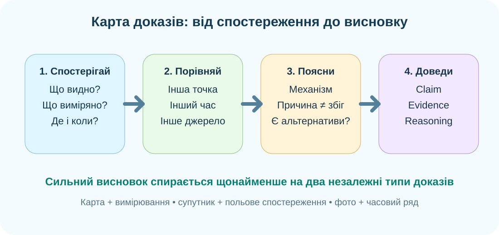

1. Зберіть систему з трьох тем

Причина чи просто сусідство?
Що є природним комплексом?
2. Дані: що вони показують, а чого не доводять?

NASA Earth Observatory: часовий ряд зміни лісового покриву. Він показує просторову зміну, але причина потребує додаткових джерел.

Знайдіть сусідство забудови, доріг, полів і водних об’єктів. За картою можна описати просторові зв’язки, але не хімічний склад води чи ґрунту.
ESA WorldCover
WorldCover дає глобальні карти земного покриву з роздільністю 10 м на основі Sentinel‑1 і Sentinel‑2. Оберіть коректний висновок.
Відкрити WorldCover ↗3. Комплексний кейс
Ситуація
На околиці населеного пункту частину трав’янистої ділянки забудували. Після сильних дощів вода довше стоїть у пониженні, а на сусідній ділянці змінився видовий склад рослин.
Побудуйте ланцюг
Які докази добрати?
4. Коротке відео: Земля вночі
Після перегляду
Нічні вогні добре показують освітлену людську інфраструктуру. Чого вони не вимірюють напряму?
5. Теорія-опора після діяльності
Біосфера
Область поширення життя. Біологічні ресурси відновлювані лише за умови, що вилучення не перевищує здатність системи відновлюватися.
Природний комплекс
Система взаємопов’язаних компонентів природи. Зональність виникає через закономірні зміни тепла й вологи, але її змінюють рельєф, океанічність і висота.
Антропосфера
Простір життя та діяльності людини. Господарство пов’язане з іншими оболонками потоками ресурсів, енергії, води, речовин і відходів.
6. CER — підсумковий доказовий висновок
Теза: «Зміна одного компонента природного комплексу може спричинити ланцюг змін в інших компонентах».
7. Домашнє завдання
Повторіть §§47–51. В електронному підручнику/ВШО знайдіть одну схему або карту, що допомагає повторити біосферу, природні комплекси чи антропосферу. Запишіть один коректний висновок і одне обмеження цього джерела.
Електронний підручник / ВШО ↗8. Діагностувальна тематична робота 5 — 10 балів
Заповніть усі три поля.